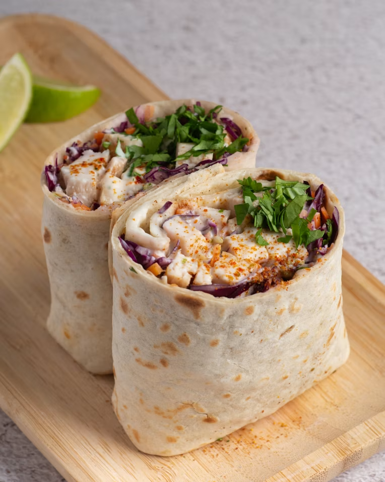

Chicken Caesar Wrap

A chicken Caesar wrap is a handheld version of the Caesar salad, combining grilled chicken, crisp romaine lettuce, creamy Caesar dressing, and Parmesan cheese inside a soft tortilla. It's a portable, flavorful, and satisfying meal that blends richness with freshness.
- Texture: Soft tortilla, tender chicken, crunchy lettuce, creamy dressing, and sometimes crispy croutons.
- Color: Golden tortilla, white chicken with brown edges, bright green lettuce, pale ivory dressing, and light yellow Parmesan.
- Flavor: Savory chicken base, creamy garlicky dressing, fresh lettuce brightness, and salty nutty Parmesan, all balanced in one bite.
- 1 tortilla wrap
- 1 cup grilled chicken, sliced
- 1 cup romaine lettuce
- 2 tbsp Caesar dressing
- 2 tbsp grated Parmesan cheese
Completed!